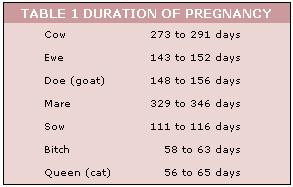
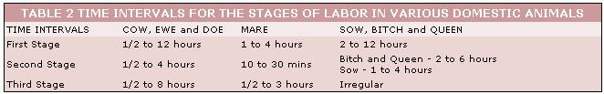

First-time farmers usually do pretty well with gardens, chopping wood and building outhouses . . . but the birth of that first calf or litter of pigs generally sets 'em back a couple of notches. R.J. Holliday DVM, aveterinarian in Missouri and MOTHER contributor, intends to remedy the situation. His tool? A new handbook precisely designed to explain all the animal facts of life in language that new back-to-the-landers can understand.
MOTHER will serialize the manual as Dr. Holliday completes each chapter and here's the first installment of:
The back-to-the-land movement has mothered all sorts of new talents and has created the need to revive many old, almost forgotten skills. Among the most important of these skills are those which deal with animal husbandry.
Unlike most modern farmers-or Agribusinessmen, as they prefer to be called-the true homesteader is vitally concerned with the creation of a rapport with nature. If he owns animals, he gives them the care and attention that marks a good herdsman. When his livestock are sick he suffers with them and tries to nurse them back to health. Above all, he craves the knowledge that will enable him to develop ever-greater skill in caring for his animals.
This handbook is an attempt to provide the modern homesteader with that knowledge.
Whether you have one cow or a hundred, the most critical time on your calendar of herdsman's activities is the calving season. The act of parturition is usually accomplished with a minimum of fuss and bother on a dam's part, but the good herdsman still needs to have an understanding of the normal birth process. He needs to be aware of the problems that can arise at this time and, should it become necessary, he must be able to assist the birth of the calf.
In many respects, the knowledge and foresight to avoid obstetrical problems is equally as important as the skills to solve them . . . and there are many things that can be done to reduce the occurrence of obstetrical emergencies and to make any crisis easier to remedy.
As a rule of thumb, a heifer should not be bred before she is about 15 months old. Since the gestation period for cattle is approximately nine months, she will then calve when about two years old. Some animals will calve normally before this age, but the stress of pregnancy and lactation will more than likely stunt their growth and thus impair their future productivity.
Always breed a heifer to a bull of a breed that is compatible in size. In recent years the desirability of the so-called "exotic" crossbreeds has received a lot of publicity . . . but most proponents minimize the problems associated with the delivery of the (usually) enormous calves that result. A live 60-lb. calf is more valuable than a dead 100-lb. one, and with the smaller calf there is less chance of causing injury to the cow. It's much better to use a bull of the smaller breeds on all your cows, especially on first-calf heifers.
Nutrition during pregnancy will greatly influence the ease of delivery. Pregnant heifers should receive a good, well-balanced ration that is relatively high in protein and definitely not fattening. This is especially true the last few months of the gestation period when most of the calf's growth takes place. A fat heifer trying to deliver a fat calf can be a very troublesome situation.
We had a saying in veterinary school: "You can't help 'em if you can't catch 'em'" . . . and, unless you have only one ultra-gentle milk cow, some sort of restraint facilities are desirable.
For a large herd of cattle these facilities may be on the order of a small stockyard with pens, alleys and a catch-chute to hold the animals for simple operations. If you have only a few cattle, something as simple as a stout gate fastened in one corner of a stall might be satisfactory. It need not be fancy. but a good strong chute will be a boon to you if ever you need to restrain a cow for treatment or assistance. Your County Agent can supply plans for the chute and for simple head-catches that you can build yourself.
If you've kept accurate breeding records you'll be all predict the expected calving dates of your herd with reasonable accuracy (see Table 1). In the absence of such records you will have to rely on certain observations.
Contrary to general opinion, the filling of the udder with milk is not a valid indication of imminent parturition. The udder can fill with milk anytime from 4 months to 1 week before calving. A much better indication is enlargement of the vulva. As a cow approaches term, the vulva begins to appear swollen and may enlarge to as much as six times normal size.
The surest sign of impending parturition is the relaxation of the pelvic ligaments, especially those that run from the "tail head" to the "pin-bones". When these ligaments are con relaxed the animal will usually calve in 12 to 24 hours.
Parturition is defined as the various physiolog processes involved in the birth of young. This process is essentially a continuous sequence of events . . . but for purposes of study and explanation, the total episode is usually divided into three separate stages.
The first stage of parturition is characterized by the initiation of uterine contractions and the dilation of the cervix. At this time the cow will be restless, "off" feed and will try to leave the herd to find a secluded place in which to give birth. At, or prior to, this time you may want to confine the cow to a smaller lot or stall so that she can be more frequently observed and more readily available in case of difficulties. If you do confine a cow, be sure that the area where she'll give birth is clean and well-bedded with straw or other absorbent material.
This first stage of uterine contractions and cervix dilation may be as short as 30 minutes in animals that have previously given birth (pluripara), to as long as 24 hours in an animal delivering her firstborn (primipara). The usual range is two to five hours.
Toward the end of this initial phase of parturition the first water bag (allantois-chorion) will usually rupture as it is forced into the birth canal. This breakage generally occurs internally and is rarely observed except, possibly, as a sudden gush of fluid. Shortly after this, the second water bag (amnion) appears. The second sac is tougher than the first and may not rupture until punctured by the feet of the fetus . . . thus, this is the water bag most often noticed.
At about the time the amnion appears at the vulva, the fetus begins to enter the pelvic portion of the birth canal. The normal position of the fetus at birth is with the head and front feet extended and with the spinal column of the calf in line and next to the spinal column of the dam. The physical pressure of the feet and head being forced into the vagina initiates the next stage (active labor) or parturition.
Active labor starts with the onset of pronounced abdominal contractions or straining, and ends with the actual expulsion of the calf. The contractions are mild at first and result in the exposure of the front feet, followed shortly by the head. As the head and shoulders are being forced through the pelvic area, the abdominal contractions reach their greatest intensity . . . and, after the head and shoulders are through, the rest of the body is usually delivered quite rapidly. The time lapse for this second phase of birthing is from one-half to four hours. Here again, a heifer may take the full four hours, while an older cow will almost always deliver in an hour or less.
The third stage of delivery is not nearly so dramatic as the preceding one but is, nevertheless, very important. The membranes that surround the calf before birth (the amnion, allantois, and chorion) are collectively known as the placenta and the expulsion of this placenta is the predominant feature of the third stage. This normally occurs within eight hours of the calf's delivery, but it takes about a month for the uterus to return to a physiologically normal condition.
Parturition in most domestic animals follows a pattern similar to that outlined above for cattle. Most variations involve the time element and the number of fetuses present (see Table 2).
As you can imagine, the time of parturition is fraught with danger for both cow and calf. Two of the most common causes of dystocia (difficult birth) are: [1] a relatively large calf in relation to the size of the birth canal and [2] a situation in which the calf's position or the position of its limbs makes it impossible for the calf to be born. There are other rare causes of dystocia, but it is beyond the scope of this article to deal with them.
In the light of the preceding description of the normal birth process, it is relatively easy to catalog the more commonly observed indications of a possible dystocia. (These signs are not listed in order of importance or frequency of occurrence.)
[1] The mother exhibits signs of the first stage of labor for 12 to 24 hours without entering the second stage.
[2] A water bag appears and does not rupture within three or four hours.
[3] A water bag appears and ruptures, but no part of the calf is evident after three or four hours.
[4] The front feet and perhaps the nose are visible when the mother strains, but these parts disappear when she ceases straining.
[5] Only one foot and leg is exposed.
[6] The head and only one leg is exposed.
[7] Both legs are exposed past the knees but the nose is not apparent.
[8] Only the head, nose or tongue is seen.
[9] Only the tail is present.
[10] Two feet are visible but they appear to be upside-down. This indicates that the calf is coming hind-feet first. Delivery can be accomplished in this position but it must be fast or the calf will suffocate. It is estimated that this backwards presentation comprises approximately 5 percent of all normal births in cattle.
Items [1] through [4] in the above list can be caused either by a malpositioned calf or by a too-large calf. If one of these situations arises and you're not sure what stage of labor the cow is in, don't rush her. Watch her for an hour or so to see if she's making any progress at all. If she isn't, other steps (such as calling your veterinarian) will have to be taken. Bear in mind, though, that it's better to give the cow showing these signs plenty of time than to needlessly upset her and possibly cause her to go out of labor.
Items [5] to [9] inclusive indicate a malposition of the calf that will make normal delivery impossible. If you've noticed any of these signs, there's no advantage to be gained by waiting. Something must be done quickly to realign the calf so that delivery can be accomplished.
Unless you've had some experience with dystocias, I would suggest that you call your veterinarian at the first sign of a difficult birth. If you live in an area where a veterinarian is not available, you'll just have to do the best you can. In that case, you'll find the next installment in this series quite helpful because it will deal with the delivery of a too-large calf and a malpositioned calf.
|
 |
 |
|